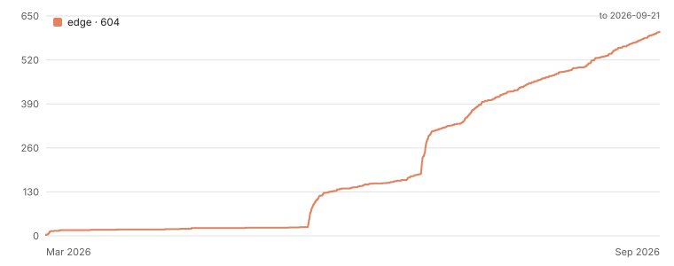

Your strap doesn’t stop working when the subscription does.
Only the app goes dark. Edge pairs with your band over Bluetooth, decodes what it recorded, and works out your sleep, recovery, strain and the rest — entirely on your phone. No account, no subscription, and no server that ever receives your health data.
Free and MIT licensed. Not affiliated with WHOOP.
Supports
- WHOOP 4, WHOOP 5, MG — full support: sleep, recovery, strain, everything computed on-device. WHOOP 4 gets the most daily wear-testing.
- Any standard Bluetooth heart-rate strap — pairs for workout tracking today (heart rate and beat timing, stored and shown). Full metrics from it are on the roadmap.
- Oura Ring — the protocol groundwork is in the codebase; not pairable in the app yet.
More device support is ongoing work, not a promise with a date — see the protocol repo for what's decoded so far.
As featured in
The goal of the so-called OpenStrap project is not to re-create the WHOOP app. Rather, the algorithms and processing methods are developed from scratch, based on public research… The health data collected from the watch never leaves the phone.
When a membership lapses, the hardware is basically useless. You own it, you still can’t use it — it just goes dark, because the app stops talking to it. So you’ve got a perfectly good sensor turning into a paperweight.


Every screenshot is real output from a WHOOP 4.0.
It runs on your phone
The band talks to the app, the app decodes the bytes and computes every metric locally, and the results are stored on the device. There’s no server that sees your health data — that isn’t a setting, it’s the architecture.
Precisely, because “no cloud” gets said too loosely: GitHub Release builds send anonymous crash diagnostics by default (switchable off); store builds send none. Neither ever includes health data. Detail →
Published methods, cited
Banister TRIMP, Cole–Kripke, Lomb–Scargle, van Hees and friends. Nothing invented, no neural net guessing at WHOOP’s formulas. You can go read the paper and decide whether you trust the number.
It admits what it doesn’t know
Every metric carries a confidence and a tier. When the data isn’t there you get a dash, not a plausible-looking guess. SpO2 and skin temperature are relative-only, because that’s what the band actually gives up.
Not a WHOOP clone
Different algorithms, different numbers. They have years of research and a team; this is textbook methods over a reverse-engineered byte stream. It trends correctly and it’ll tell you when you’re under-recovered. It isn’t their secret sauce and never claims to be.
Before you install
- Quit the official WHOOP app before pairing. Bluetooth only lets one app own the band at a time.
- Pick one and stay on it. A firmware push from the official app could change the records this depends on, and there’s no fixing that from here.
- Not medical-grade. These are approximations from published research, not validated against a lab. Nothing here is a diagnosis.
- There are bugs. It’s a beta built by one person. Open an issue when something looks wrong — that’s genuinely the most useful thing you can do.
How it’s put together
band → Bluetooth → protocol decoder → local storage → analytics → the UI
Where it’s got to

The cliff in mid-July is Hackaday and Adafruit covering it on the same day. Chart generated from the GitHub API and served from this site, rather than embedded from star-history.com or starchart.cc — there is no analytics or third-party service on this page. (The screenshots above load from GitHub, which also hosts it.)
☕ Like it? Help keep it going.
No subscription, no paywall, no company behind this. If OpenStrap gave your band a second life, a small tip genuinely helps.
- Bitcoin
bc1qvtcch38dcwp967ar764uu6eetw7tf907844wfq- EVM — Ethereum · Base · Arbitrum · Optimism · Polygon
0x8310C89393366b7eBCD47ABa82e1dfB5ECeFFbD9
Tap an address to select it. What this actually pays for: the Apple Developer membership that keeps the TestFlight build alive, a second band to get WHOOP 5 support tested, and coffee. More →
Nothing is gated behind paying, and nothing ever will be. Bug reports from real bands are worth more than money — there’s only one person’s physiology in the test data otherwise.